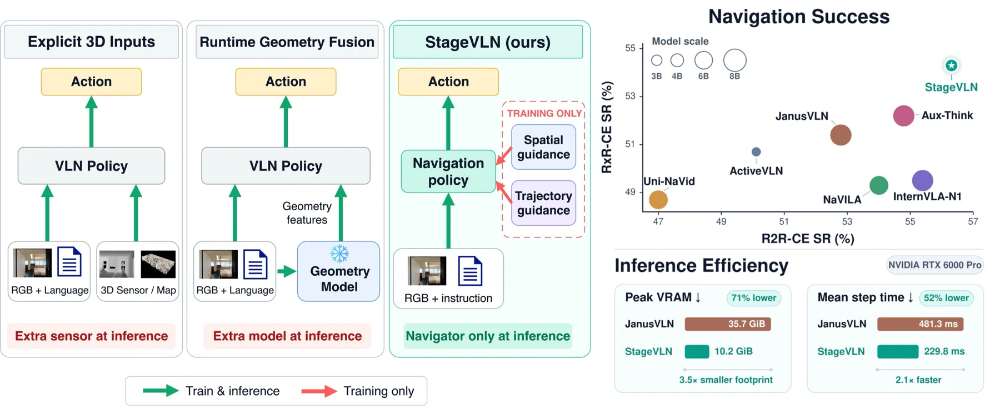
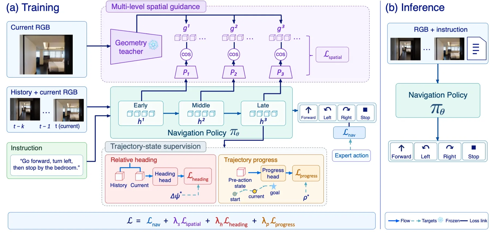
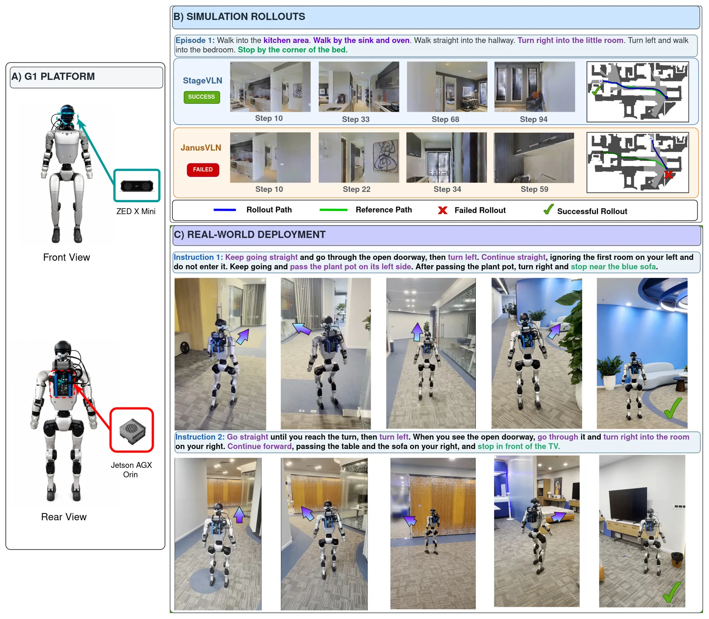

StageVLN：面向高效视觉语言导航的空间与轨迹辅助引导
StageVLN: Spatial and Trajectory Auxiliary Guidance for Efficient Vision-Language Navigation
训练期用冻结 VGGT-Ω 做多级几何蒸馏 + 相对朝向 + 专家路线进度，部署时只留 Qwen3.5-4B 导航策略；R2R-CE 56.3% SR / 51.4% SPL、RxR-CE 54.3% SR，推理显存 10.24 GiB（比 NaVILA 低 41.4%）。
SR/SPL
SR
VRAM
SR gain
作者、单位与技术谱系 · Research context
作者与单位
研究脉络
- VGGT / VGGT-Ω（Wang et al.）方法基座关系：直接以冻结的 VGGT-Ω 作为几何教师，沿用其多视图几何表征作为蒸馏目标。[论文 §IV-A2、§IV-D2 与参考[9][10]]
- Spatial Forcing（Li et al., ICLR 2026，参考[18]）方法上游关系：中间视觉表征对齐到预训练几何表征、且保持推理架构不变的范式直接沿用。[论文 §II-B、§III-C 与参考[18]]
- FitNets（Romero et al., 2015，参考[17]）方法基座关系：把中间特征监督（hint）作为知识迁移机制，是本文多级蒸馏的最早方法学源头。[论文 §II-B 与参考[17]]
合作网络
- VinMotion ↔ USC 跨机构共同署名VinMotion, Inc.（Anh Dao 等 8 人） → University of Southern California（Quan Nguyen）关系：共同署名[arXiv 首页署名]
- VinMotion 内部同单位署名Anh Dao → Van-Truong Nguyen关系：共同署名（同单位）[arXiv 首页署名]
- 对 VGGT-Ω 与 Qwen3.5 的技术依赖StageVLN → VGGT-Ω（Wang et al.）/ Qwen3.5-4B关系：明确技术依赖（非共同署名）[论文 §IV-A2 与参考[10][43]]
以上作者、单位与谱系均来自论文首页署名与正文引用；机构间关系仅记录共同署名与公开技术依赖，未推断导师/师生关系。
方法本质拆解 · What actually changed
是不是微调？
是在预训练骨干上训练新增接口：可学的是三组轻量对齐投影器、关系头（相对朝向）与进度头，以及导航器本体参数；视觉编码器与几何教师（VGGT-Ω）全程冻结。训练目标为动作监督叠加三项辅助损失，权重 λ_s=0.3、λ_h=λ_p=0.1，1 个 epoch、4×H100。推理时投影器与轨迹头被移除，因此可学增量只体现在被‘塑造过’的导航器隐藏表征上。
有没有额外约束？
训练期新增三类约束：多级几何蒸馏用余弦距离把导航器第 8/16/24 层的当前帧视觉 token 拉向 VGGT-Ω 多层特征（教师目标 sg 停止梯度，并加位置编码、重排到当前图像网格）；相对朝向用 sine–cos 目标约束历史-当前帧的相对旋转（±15° 名义增量）；进度用软标签 BCE（softplus 形式）约束已完成的专家前进动作比例。约束只作用在训练期的中间表征与辅助头，不改变输入接口。
推理/后端到底做了什么？
推理期只评估 π_θ(a_t | l, O_t)：几何教师、对齐投影器与轨迹头全部从动作生成通路中移除，保留原始 RGB–语言策略。因此没有额外的几何编码器、没有分块或匹配后处理、也没有全局优化后端；部署只提供 RGB 观测与语言指令。论文强调这正是与 JanusVLN 等‘推算时几何融合’方法的关键差异。
方法本质是什么？
本质是把‘几何与轨迹结构’从推理图里挪到训练信号里：用冻结几何教师的中间层特征把导航器的分层隐状态锚到几何一致的空间，再用相对朝向与路线进度把跨帧朝向与全局状态压进同一组隐状态。它改变的是导航器内部表征对几何/轨迹的不确定性，而不是推理架构；没有新增全局优化或后端。一句话指向：不引入运行时几何前端，却让策略表征在训练后被几何与进度‘矫正’。
输入为 RGB 历史+语言指令；改变的位置是训练期把冻结 VGGT-Ω 的多层特征蒸馏进导航器第 8/16/24 层并对齐相对朝向与路线进度；合并动作是按 λ 加权三项辅助损失、推理时移除全部辅助模块；直接效果是 4B 骨干在无推理几何编码器下取得 R2R 56.3% SR、RxR 54.3% SR，并显著降低推理显存。

动机与问题Motivation
动机与问题
论文要回答的问题是：能否在提升导航器的同时保持其原始部署通路？（“can geometric guidance and trajectory-state supervision improve the navigator while preserving its original deployment pathway?”）标准动作监督只约束输出，不显式约束中间表征去保留场景几何、相对朝向与全局进度。直接方案是把预训练几何模型接进推理管线，但这会引入运行时依赖、提高部署成本，尤其在算力受限的真实机器人上。作者据此提出在训练期对导航器的分层隐藏状态做几何蒸馏，并附加两个轨迹状态目标，推理时不引入任何新模块。
方法Method
方法总览
StageVLN 由三路互补监督构成，全部只作用于训练：(i) 多级几何表征蒸馏——冻结几何教师对当前帧给出多层空间特征，导航器在第 8/16/24 层提取当前帧视觉 token，经可训练投影器与教师特征做余弦对齐；(ii) 相对朝向监督——对历史帧与当前帧视觉 token 池化后，用关系头预测两者之间的相对朝向向量，目标由专家动作的累计转角（±15° 名义增量）给出；(iii) 专家路线进度监督——预测已完成的专家前进动作占全程的比例。最终损失为 L = L_nav + λ_s·L_spatial + λ_h·L_heading + λ_p·L_progress。
关键技术细节
实现上，导航器为 Qwen3.5-4B，教师为冻结的 VGGT-Ω；导航器最多接收 8 帧历史 RGB 加当前帧，而教师只处理当前帧。导航器第 8/16/24 层隐藏状态对齐到 VGGT-Ω aggregator 的零基索引 11/17/23；每个投影器为 LayerNorm + 两层 MLP（2560→4096→2048，GELU）。超参 λ_s=0.3、λ_h=λ_p=0.1，空间损失在三层间等权平均；优化器 AdamW，语言模型与输出头 lr=1e-6，视觉 merger、投影器与轨迹头 lr=1e-5，视觉编码器与几何教师冻结；训练 1 个 epoch、全局 batch 64、4 张 H100。朝向目标用 ±15° 名义增量，sine–cos 编码避免角度回绕不连续；进度头读取的是动作 token 之前的隐藏状态（防止 teacher forcing 泄漏）。

实验Experiments
实验设置
评测在 Habitat 仿真器中使用 Matterport3D 室内场景，基准为 R2R-CE 与 RxR-CE。导航微调只使用联合训练集的专家演示：R2R-CE 10,819 条、RxR-CE 19,990 条，不引入额外导航数据；评测使用 validation-unseen，含 R2R-CE 1,839 条、RxR-CE 3,669 条轨迹。指标为导航误差 NE、oracle 成功率 OS、成功率 SR、路径长度加权成功率 SPL，RxR-CE 另报 nDTW。对照组涵盖 HPN+DN、CMA、VLN-BERT、DreamWalker、GridMM、NaVILA、StreamVLN、InternVLA-N1、JanusVLN 等离散与连续、有无几何编码器的方法；真实部署在 Unitree G1 人形机器人 + ZED X Mini 相机 + Jetson AGX Orin（远端 RTX 5090）上完成。
实验数字与比较
主结果（表 I）：R2R-CE val-unseen 上 StageVLN 4B 取得 NE 5.17、OS 64.7、SR 56.3、SPL 51.4，SR/OS 为所列表方法最高；RxR-CE 上 NE 5.65、SR 54.3、SPL 42.8、nDTW 58.3，SR 最高、NE 最低。相对 JanusVLN（7B+1B 几何编码器，表 I）：R2R-CE SR +3.5、SPL +2.2，RxR-CE SR +2.9、SPL −1.5。部署效率（表 II）：StageVLN 峰值分配显存 10.24 GiB，NaVILA 17.47 GiB、StreamVLN 17.48 GiB；平均单步耗时在 RTX 5090 上为 304.5 ms、RTX 6000 Pro 上为 229.8 ms，较 NaVILA（365.2/383.1 ms）分别降低 16.6% 与 40.0%，峰值显存较 NaVILA 低 41.4%；JanusVLN 在 RTX 5090 上 OOM。
消融/失败边界
组件消融（表 III，教师统一用 VGGT）：纯 SFT 基线为 46.49 SR / 42.32 SPL；仅用单层对齐（1L）升到 48.50/41.86，多级对齐（ML）升到 52.26/46.72；在多级几何之上单独加相对朝向反而把 SR/SPL 拉到 49.97/43.80（即只加朝向会变差）；不加几何、仅用朝向+进度为 54.43/48.58；完整组合（ML+朝向+进度）为 55.36/48.44、NE 5.58、OS 67.37，较 SFT 提升 SR +8.87、SPL +6.12，但 NE 反高于 SFT（5.58 vs 5.19）。教师消融（表 IV）：VGGT-Ω 取得最佳 NE/SR/SPL（5.17/56.28/51.37），VGGT 则有更高 OS（67.37）。失败边界：目标并不一致地提升所有指标——朝向单独使用有害、NE 未随之下降，说明这些辅助目标并非单调增益。
局限与迁移Limitations & Transfer
局限与待核验
作者明确承认的边界：消融显示并非所有辅助目标都单调提升，相对朝向单独加入会降低 SR/SPL，且完整模型的 NE 高于 SFT；进度仅度量专家路线的前进动作完成比例，不构成 stopping 规则，进度头推理时被移除。真实世界部分只给出两条指令的定性演示（含走廊穿行、门洞过渡与物体指代），缺少实机定量指标与误差分布，也未报告失败案例。我们待核验项：(a) 多个具身导航基准与更多机器人平台上的实机成功率；(b) λ 权重的敏感性以及层对齐选择的敏感性；(c) 论文承认使用生成式 AI 辅助写作 Abstract/Intro/Related Work，需以正文与代码复核细节。此外，本仓库未获得官方代码，复现细节以全文为准。
与你研究路线的关系
可迁移模块有两处：其一，“把冻结几何基础模型的中间层稠密表征当作导航/策略隐藏状态的监督目标，而不是运行时前端”这一接口，可直接借到多传感器融合里，用几何基础模型给融合表征做训练期锚定。其二，“相对朝向 + 全局进度”这类轨迹状态监督，提示可以在状态估计网络里加入与几何量一致的低维中间目标来正则化隐状态，而不改变部署图。下一步实验建议：(1) 把同样的“训练期几何蒸馏、推理期无几何编码器”协议搬到 VIO/融合骨干，检验是否在弱纹理/大视角变化下提升鲁棒性；(2) 复现表 III 的朝向单项消融，确认‘加入相对朝向反而有害’是目标冲突还是权重问题。

